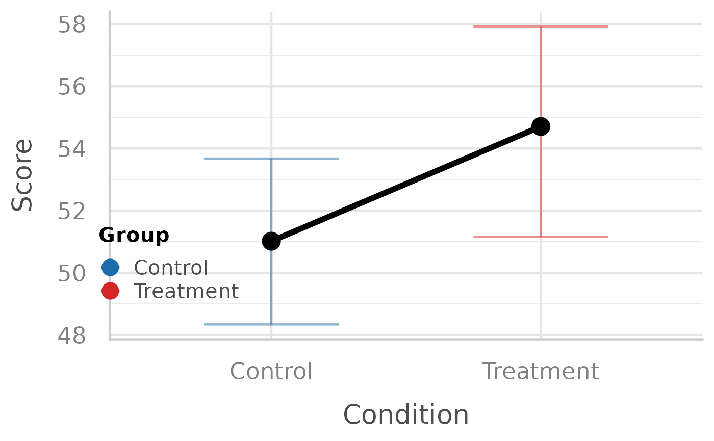

colleyRstats helps streamline a typical analysis
workflow: configure a session, check assumptions, create a plot, and
generate manuscript-ready text.
Session setup
Attach the packages you need first, then configure the session.
colleyRstats_setup() sets the package’s
ggplot2 theme, so every figure below comes out with
consistent typography.
library(colleyRstats)
#> Loading required package: ggplot2
#> Registered S3 methods overwritten by 'ggpp':
#> method from
#> heightDetails.titleGrob ggplot2
#> widthDetails.titleGrob ggplot2
colleyRstats_setup(print_citation = FALSE, verbose = FALSE)If you also want the package’s conflicted preferences –
dplyr::filter() over stats::filter(),
psych::describe() over Hmisc::describe(), and
so on – pass set_conflicts = TRUE, and put that call
after every library() call in the
script:
library(colleyRstats)
library(easystats)
library(dplyr)
colleyRstats_setup(set_conflicts = TRUE) # lastThe ordering matters in both directions. Activating
conflicted replaces library() for the rest of
the session, and meta-packages such as easystats cannot be
attached once it has; and conflicted resolves only those
names that are ambiguous among the packages attached at the time, so a
call made before the rest of your library() calls has less
to work with.
Check assumptions
Every participant here saw both conditions, so the design is
within-subjects. Name the participant column as subject:
the check then tests the per-participant differences, which is what a
paired test assumes to be normal.
check_normality_by_group(main_df, "ConditionID", "score", subject = "Participant")
#> [1] TRUE
#> attr(,"tests")
#> group n W p_value p_adjusted testable
#> 1 differences 20 0.958116 0.5069337 0.5069337 TRUE
#> attr(,"method")
#> [1] "differences"
#> attr(,"p_adjust")
#> [1] "none"
#> attr(,"untestable")
#> character(0)
#> attr(,"dropped_subjects")
#> character(0)For a between-subjects design, leave subject out: each
group is then tested on its own (Holm-corrected across groups), and
check_homogeneity_by_group() adds the Brown-Forsythe test
of equal variances.
Create a plot
plot_effect(
data = transform(main_df, Group = ConditionID),
x = "ConditionID",
y = "score",
fillColourGroup = "Group",
ytext = "Score",
xtext = "Condition"
)
#> Warning: Not every combination of 'ConditionID' and 'Group' has data; the
#> main-effect line averages only the cells that do, so its levels are not based
#> on the same groups.
#> `geom_line()`: Each group consists of only one observation.
#> ℹ Do you need to adjust the group aesthetic?
Produce a reporting sentence
art_summary <- data.frame(
Effect = "ConditionID",
Df = 1,
`F value` = 5.42,
`Pr(>F)` = 0.027,
Df.res = 19,
check.names = FALSE
)
report_art(art_summary, dv = "score")
#> The ART found a significant main effect of \ConditionID{} on score (\F{1}{19}{5.42}, \p{0.027}, $\eta_{p}^{2}$ = 0.22, 95\% CI: [0.00, 0.50]).Next steps
-
vignette("analyzing-a-user-study")walks a complete within-subjects study from raw data to manuscript-ready text and figures, including the one-callanalyze_and_report()/report_all()pipeline. -
vignette("choosing-a-test")shows howrecommend_test()selects the right test or mixed model from the data, and how to report GLMMs/CLMMs. -
vignette("overleaf")covers getting the LaTeX output into an Overleaf project that compiles immediately (latex_preamble(),use_colleyrstats_sty(),emit_overleaf()). - Browse the reference for reporting helpers such as
reportMeanAndSD()andreportDunnTest(), and usegenerateMoboPlot()/generateMoboPlot2()for optimization studies.